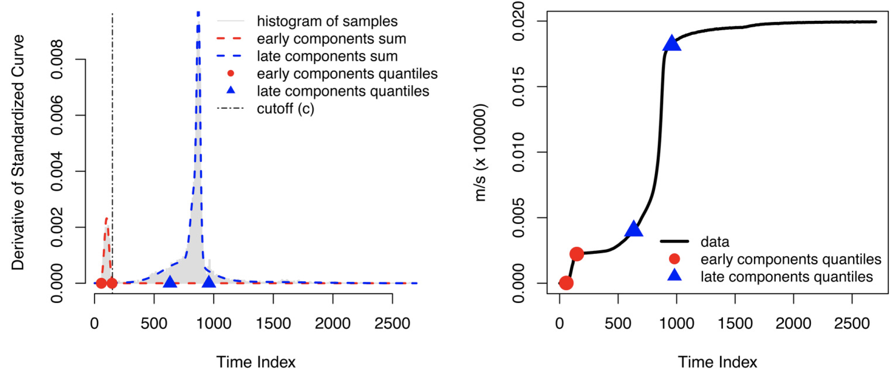
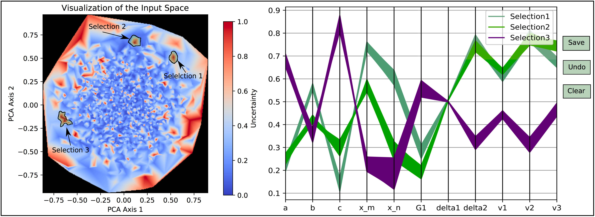
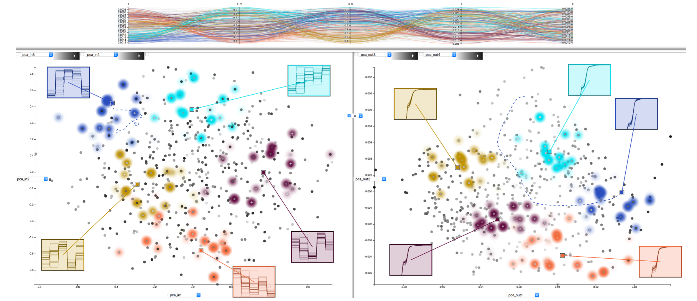
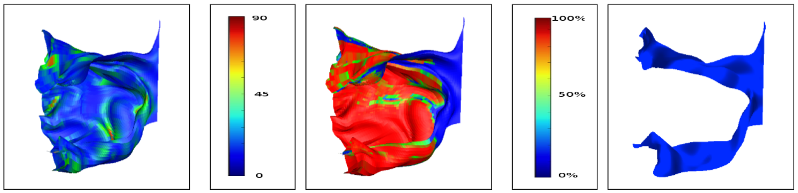

Home
Research
Fun Facts
About Me
Contacts
While pursuing my PhD, I was working with Prof. Han-Wei Shen in the field of Graphics and Data Visualization. I worked with flow field data and particle tracing using streamlines and stream surfaces. I also looked at the time-varying multivariate data exploration and using information theory to provide critical insights into the data. I also worked with turbulent flow structures and vortex visualization for the unstable time-varying complex flows.
Publication(s):
2020:
"Cinema: Bandit: a visualization application for beamline science demonstrated on XFEL shock physics experiments",Daniel Orban, Divya Banesh, Cameron Tauxe, Christopher M Biwer, Ayan Biswas, Ramon Saavedra, Christine Sweeney, Richard L Sandberg, CA Bolme, James Ahrens, David Rogers (pdf soon)
"Enhancing the Visualization of Laue Diffraction for Analyzing Strength Model Parameters", Ayan Biswas, David J Walters, Devin Craig Francom, Sky K Sjue, Earl Christopher Lawrence, John L Barber, James Paul Ahrens, Cynthia Anne Bolme, Kyle James Ramos, Darby Jon Luscher (pdf soon)
2019:
"Multivariate Pointwise Information-driven Data Sampling and Visualization", Soumya Dutta, Ayan Biswas, James Ahrens, Entropy journal, 2019. (pdf soon)
"Parameter Tuning and Physics Model Comparison Using Statistical Learning", Devin Craig Francom, Earl Christopher Lawrence, Ayan Biswas, David J Walters, Sky K Sjue, Darby Jon Luscher, James Paul Ahrens. (pdf soon)
"Fast Strength Model Parameter Optimization and Model Comparison Using Bayesian Statistics", Ayan Biswas, David Walters, Devin Francom, Earl Lawrence, Darby Luscher, Sky Sjue, James Ahrens, Journal Bulletin of the American Physical Society. (pdf soon)
"Workflow and visual analysis for XFEL shock physics experiments using Cinema: Bandit",Cynthia Bolme, Daniel Orban, Divya Banesh, Cameron Tauxe, Chris Biwer, Ayan Biswas, Ramon Saavedra, Christine Sweeney, Richard Sandberg, James Ahrens, David Rogers,Bulletin of the American Physical Society. (pdf soon)
2018:
“An Interactive Exploration Tool for High-Dimensional Datasets: A Shock Physics Case Study”, Ayan Biswas, Christopher M. Biwer, David J. Walters, James Ahrens, Devin Francom, Earl Lawrence, Richard L. Sandberg, D. Anthony Fredenburg, and Cynthia Bolme, Computing in Science and Engineering (CISE) 2018. (pdf)
“In Situ Data-Driven Adaptive Sampling for Large-scale Simulation Data Summarization”, Ayan Biswas, Soumya Dutta, Jesus Pulido, and James Ahrens, In Situ Infrastructures for Enabling Extreme-scale Analysis and Visualization (ISAV 2018), co-located with Supercomputing 2018. (pdf)
“A Flexible System for In Situ Triggers”, Matthew Larsen, Amy Woods, Nicole Marsaglia, Ayan Biswas, Soumya Dutta, Cyrus Harrison, and Hank Childs. (**Best Paper**), In Situ Infrastructures for Enabling Extreme-scale Analysis and Visualization (ISAV 2018), co-located with Supercomputing 2018. (pdf)
“Bayesian calibration of strength parameters using hydrocode simulations of symmetric impact shock experiments of Al-5083”, David J Walters, Ayan Biswas, Earl C Lawrence, Devin C Francom, Darby J Luscher, D Anthony Fredenburg, Kelly R Moran, Christine M Sweeney, Richard L Sandberg, James P Ahrens, CA Bolme , Journal of Applied Physics, Volume 124, 2018. (pdf)

"Visualization of Uncertainty for Computationally Intensive Simulations Using High Fidelity Emulators", Ayan Biswas, Kelly R. Moran, Earl Lawrence, and James Ahrens
IEEE Vis (Scivis Short papers), 2018, Berlin, Germany (pdf)

“Information Guided Exploration of Scalar Values and Isocontours in Ensemble Datasets”, Subhashis Hazarika, Ayan Biswas, Soumya Dutta, and Han-Wei Shen
Information Theory Application in Visualization (pdf)
“Drag and Track: A Direct Manipulation Interface for Contextualizing Data Instances within a Continuous Parameter Space: Application to Shock Physics”, Dan Orban, Dan Keefe, Ayan Biswas, James Ahrens, and David Rogers, IEEE Vis 2018, Berlin, Germany, also on IEEE Transactions on Visualization and Computer Graphics 2018, (pdf)

2017:
"Pointwise Information Guided Visual Analysis of Time-varying Multi-fields", Soumya Dutta, Xiaotong Liu, Ayan Biswas, Jen-Ping Chen and Han-Wei Shen, Siggraph Asia Symposium on Visualization 2017, Bangkok Thailand. (pdf)
"Uncertainty Visualization Using Copular-Based Analysis in Mixed Distribution Models", Subhashis Hazarika, Ayan Biswas, and Han-Wei Shen, IEEE Vis 2017, Phoenix. (pdf)

2016:
"Visualization of Time-Varying Weather Ensembles Across Multiple Resolutions", Ayan Biswas, Guang Lin, Xiaotong Liu and Han-Wei Shen, IEEE Vis 2016, Baltimore. (pdf)
"A Scalable Streamline Generation Algorithm Via Flux-Based Isocontour Extraction", Ayan Biswas, Richard Strelitz, Jonathan Woodring, Chun-Ming Chen, and Han-Wei Shen, EGPGV 2016, Groningen, Netherlands. (pdf)
2015:
"An Uncertainty-Driven Approach to Vortex Analysis Using Oracle Consensus and Spatial Proximity", Ayan Biswas, David Thompson, Wenbin He, Qi Deng, Chun-Ming Chen, Han-Wei Shen, Raghu Machiraju, and Anand Rangarajan, PacificVis 2015, Hangzhou, China. (pdf)
"Efficient Local Histogram Searching via Bitmap Indexing", Tzu-Hsuan Wei, Chun-Ming Chen and Ayan Biswas, EuroVis 2015, Italy. (pdf)
"Uncertainty Modeling and Error Reduction for Pathline Computation in Time-varying Flow Fields", Chun-Ming Chen, Ayan Biswas and Han-Wei Shen, PacificVis 2015, Hangzhou, China. (pdf)
2014:
"Evaluation of Stream Surfaces Using Error Quantification Metrics", Ayan Biswas and Han-Wei Shen, SPIE VDA 2014, San Francisco, California (pdf)

"Supporting Correlation Analysis on Scientific Datasets in Parallel and Distributed Settings", Yu Su, Gagan Agarwal, Jonathan Woodring, Ayan Biswas, and Han-Wei Shen, HPDC 2014 (pdf)
2013:
"An Information-aware Framework for Exploring Multivariate Data Sets", Ayan Biswas, Soumya Dutta, Han-Wei Shen, Jonathan Woodring, IEEE Vis 2013, Atlanta, Georgia. (pdf)
Ongoing Research Works:
1. "Uncertainty Based Vortex Core Detection"
2. "Parallel Streamline Generation"
3. "Multivariate Time-Varying Analysis"
4. "Bitmap Index Based Feature Search"